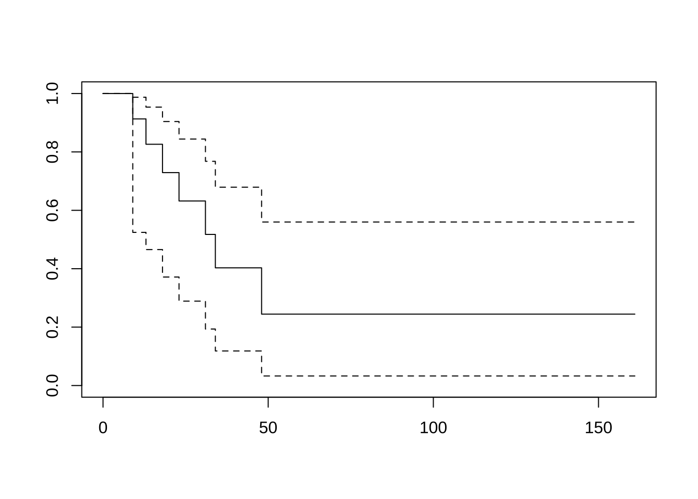

제 2 장 생존함수의 추정
2.1 생명표방법을 이용한 생존함수 추정
다음은 이, 박, and 유 (2005) 의 7.2.1 절에 나오는 생명표방법에 대한 요약 설명이다.
시간 \((0, \infty)\)구간을 다음과 같은 경계선을 이용하여 \(k+1\) 개의 구간으로 나누었다고 가정하자. (\(t_0=0\))
\[ (t_0, t_1] \quad (t_1,t_2] \quad \dots \quad (t_{k-1}, t_k] \quad (t_k, \infty) \]
생존함수는 다음과 같은 조건부 확률의 축차식으로 구할 수 있다.
\[\begin{align} S(t_i) & = p(T>t_i) \\ & = P(T > t_i | T > t_{i-1}) P(T > t_{i-1}) \notag \\ & = P(T > t_i | T > t_{i-1}) P(T > t_{i-1} | T > t_{i-2}) P(T > t_{i-2} ) \notag \\ & = \cdots \notag \\ & = P(T > t_i | T > t_{i-1}) P(T > t_{i-1} | T > t_{i-2}) P(T > t_{i-2} ) \dots P(T> t_2 | T > t_1)P(T > t_1) \tag{2.1} \end{align}\]만약 주어진 구간 \((t_{i-1}, t_i]\) 에서 시망자의 수 \(d_i\) 와 중도절단자의 수 \(c_i\) 가 주어졌다면 조건부 생존 함수는 다음과 같이 추정할 수 있다.
\[ \hat P(T > t_{i} | T > t_{i-1}) = 1 -\frac{d_i}{n'_i}\] 위에서 \(i\) 번째 구간의 위험그룹 인원수 \(n_i = n_{i-1} - d_{i-1} -c_{i-1}\) 로 주어지면 유효인원수(effective sample size) \(n'_i\) 는 다음과 같이 계산한다.
\[ n'_i = n_i - \frac{c_i}{2} \]
생존함수의 추정은 조건부 확률의 축차식을 이용하여 다음과 같이 계산한다.
\[ \hat S(t_i) = \prod_{k=1}^i \left ( 1-\tfrac{d_k}{n'_k} \right ) \]
이와 같이 주정된 생존함수의 분산은 다음과 같은 그린우드의 공식으로 구할 수 있다.
\[ \widehat {Var} (\hat S (t_i) ) = \hat S(t_i) \sum_{k=1}^i \frac{d_k}{ n_k^{'} ( n_k^{'} -d_k)} \]
생명표방법을 이용한 생존함수 추정은 표를 이용하면 편리하다. 다음은 각 구간에서 사망자수와 중도절단수가 주어진 경우 생명표방법을 이용하여 생존함수를 추정하는 예를 보여준다.
| 구간 | 위험그룹인원수 | 사망자 수 | 중도절단 수 | 유효인원수 | 사망율 | 생존율 | 생존함수 추정 |
|---|---|---|---|---|---|---|---|
| \(I_i\) | \(n_i\) | \(d_i\) | \(c_i\) | \(n'_i\) | \(\tfrac{d_i}{n'_i}\) | \(1-\tfrac{d_i}{n'_i}\) | \(\hat S(t_i)\) |
| 0-1 | 115 | 47 | 19 | 105.5 | 0.4455 | 0.5545 | 1.000 |
| 1-2 | 49 | 5 | 17 | 40.5 | 0.1235 | 0.8765 | 0.5545 |
| 2-3 | 27 | 2 | 15 | 19.5 | 0.1026 | 0.8974 | 0.4860 |
| 3-4 | 10 | 2 | 2 | 9.0 | 0.2222 | 0.7778 | 0.4362 |
| 4-5 | 6 | 0 | 6 | 3.0 | 0.0000 | 1.00 | 0.3393 |
R 에서는 패키지 KMsurv 의 함수 lifeTable() 를 이용하면 생명표방법을 이용한 생존함수 추정을 할 수 있다.
위의 표에 나타난 자료를 이용하여 생명표방법을 이용한 생존함수 추정값을 구해보자.
death1 <- c(47, 5, 2, 2, 0)
censor1 <- c(19, 17, 15, 2, 6)
intEndpts <- 0:(length(death1))
N <- sum(censor1) + sum(death1)
lfres0 <- lifetab(tis = intEndpts, ninit=N, nlost=censor1, nevent=death1)
lfres0[c("nsubs", "nevent", "nlost", "nrisk", "pdf", "surv","se.surv")]## nsubs nevent nlost nrisk pdf surv se.surv
## 0-1 115 47 19 105.5 0.44550 1.0000 0.00000
## 1-2 49 5 17 40.5 0.06846 0.5545 0.04839
## 2-3 27 2 15 19.5 0.04985 0.4860 0.05119
## 3-4 10 2 2 9.0 0.09693 0.4362 0.05680
## 4-5 6 0 6 3.0 NA 0.3393 0.07487이, 박, and 유 (2005) 의 예제 7-1 에 나타난 자료를 이용하여 생명표방법을 이용한 생존함수 추정값을 구해보자.
death2 <- c(456, 226, 152, 171, 135, 125, 83, 74, 51, 42, 43, 34, 18, 9, 6, 0)
censor2 <- c(0, 39, 22, 23, 24, 107, 133, 102, 68, 64, 45, 53, 33, 27, 23, 30)
intEndpts = 0:(length(death2))
N <- sum(censor2) + sum(death2)
lfres71 <- lifetab(tis = intEndpts, ninit=N, nlost=censor2, nevent=death2)
lfres71[c("nsubs", "nevent", "nlost", "nrisk", "pdf", "surv","se.surv")]## nsubs nevent nlost nrisk pdf surv se.surv
## 0-1 2418 456 0 2418.0 0.18859 1.0000 0.000000
## 1-2 1962 226 39 1942.5 0.09440 0.8114 0.007955
## 2-3 1697 152 22 1686.0 0.06464 0.7170 0.009179
## 3-4 1523 171 23 1511.5 0.07380 0.6524 0.009735
## 4-5 1329 135 24 1317.0 0.05931 0.5786 0.010138
## 5-6 1170 125 107 1116.5 0.05813 0.5193 0.010304
## 6-7 938 83 133 871.5 0.04392 0.4611 0.010380
## 7-8 722 74 102 671.0 0.04601 0.4172 0.010451
## 8-9 546 51 68 512.0 0.03697 0.3712 0.010579
## 9-10 427 42 64 395.0 0.03554 0.3342 0.010717
## 10-11 321 43 45 298.5 0.04303 0.2987 0.010891
## 11-12 233 34 53 206.5 0.04209 0.2557 0.011124
## 12-13 146 18 33 129.5 0.02968 0.2136 0.011397
## 13-14 95 9 27 81.5 0.02031 0.1839 0.011766
## 14-15 59 6 23 47.5 0.02066 0.1636 0.012260
## 15-16 30 0 30 15.0 NA 0.1429 0.0133002.2 누적한계추정법에 의한 생존함수 추정
의학연구에서는 사람이나 동물을 대상으로 연구를 진행하는데 이러한 경우 실험 대상자의 수도 많지 않으며 생존함수가 어떤 분포를 따르는지 미리 알기 힘들다. 따라서 생존함수를 추정할 때 비모수적 방법(nonparametric methods)를 이용한다. 비모수적 방법의 대표적인 예는 위에서 고혀한 생존함수를 축차적인 조건부 확률의 곱으로 나타내는 공식 (??) 을 이용한다.
비모수적 방법으로 생존함수를 추정하는 경우 시간에 따른 생존함수의 변화가 각 관측점에서 일어나게 된다. 표본에서 괸측된 생존시간들을 순서대로 \(t_1 < t_2 < \dots < t_n\) 나열한 다음 누적한계추정법(product limit estimator; Kaplan-Meier estimator)은 생존함수를 다음의 식으로 추정한다.
\[\begin{equation} \hat S(t) = \prod_{t_i \le t} \left ( 1-\frac{d_i}{n_i} \right)^{\delta_i} = \prod_{t_i \le t} \left ( \frac{n_i-d_k}{n_i} \right)^{\delta_i} \tag{2.2} \end{equation}\]
- \(n_i\) : 시간 \(t_i\) 바로 직전까지 중도절단되지 않고 생존한 사람의 수 (위험집단의 수; number at risk)
- \(d_i\) : 시간 \(t_i\) 에 사망한 사람의 수
생존함수 추정량 \(\hat S(t)\) 의 분산은 다음과 같이 주어진다.
\[ Var(\hat S(t)) = [\hat S(t)]^2 \sum_{t_i \le t} \frac{d_i}{n_i(n_i-d_i)} \]
위의 분산추정량으로 생존함수의 신뢰구간을 구하면 [0,1]의 범위를 벗어나는 경우가 생긴다. 이러한 단점을 보완하기 위하여 생존함수의 변환(log-log transformation)을 이용한 신뢰구간을 구하는 방법을 주로 사용한다.
\[ Var\left ( \log \left [ - \log \hat S(t) \right ] \right ) \approx \frac{1}{[\hat S(t)]^2 } \sum_{t_i \le t} \frac{d_i}{n_i(n_i-d_i)} \]
예제 2.1 (누적한계추정법) 다음 주어진 11명에 대한 생존자료에 대하여 누적한계추정법으로 생존함수를 추정하는 방법을 알아보자. \(+\)는 중도절단된 자료를 표시한다.
\[ 9,~~13,~~13+,~~18,~~23~~,28+,~~31,~~,34,~~,45+,~~,48,~~161+ \]
누적한계추정법은 생존함수를 다음과 같이 축차적으로 구할 수 있다.
\(\blacksquare\)
다음은 예제 자료에 대하여 누적한계추정법으로 생존함수를 추정하는 R 프로그램이다.
t <- c(9, 13, 13, 18 ,23 ,28, 31, 34 ,45 ,48 ,161)
cens <- c(1,1,0,1,1,0,1,1,0,1,0)
df <- Surv(t, cens)
df## [1] 9 13 13+ 18 23 28+ 31 34 45+ 48 161+res.km <- survfit(Surv(t, cens)~1, conf.type="log-log")
res.km## Call: survfit(formula = Surv(t, cens) ~ 1, conf.type = "log-log")
##
## n events median 0.95LCL 0.95UCL
## 11 7 31 13 NAsummary(res.km)## Call: survfit(formula = Surv(t, cens) ~ 1, conf.type = "log-log")
##
## time n.risk n.event survival std.err lower 95% CI upper 95% CI
## 9 11 1 0.909 0.0867 0.5081 0.987
## 13 10 1 0.818 0.1163 0.4474 0.951
## 18 8 1 0.716 0.1397 0.3502 0.899
## 23 7 1 0.614 0.1526 0.2658 0.835
## 31 5 1 0.491 0.1642 0.1673 0.753
## 34 4 1 0.368 0.1627 0.0928 0.657
## 48 2 1 0.184 0.1535 0.0117 0.525plot(res.km)2.3 Nelson-Aalen 추정량
Nelson-Aalen 추정량은 생존함수와 위험함수의 관계를 이용하는 추정량이다. 누적 위험함수 \(H(t)\) 는 시간 \(t\)까지 위험함수의 합이므로 다음과 같이 추정할 수 있다.
\[ \hat H(t) = \sum_{t_i \le t} \frac{d_i}{n_i} \]
따라서 생존함수과의 관계를 이용하면 Nelson-Aalen 추정량은 다음과 같이 주어진다.
\[ \hat S(t) = e^{- \hat H(t)} \]
다음은 예제 자료에 대하여 Nelson-Aalen 추정량(type="fh")으로 생존함수를 추정하는 R 프로그램이다.
res.fh <- survfit(Surv(t, cens)~1, conf.type="log-log", type="fh")
res.fh## Call: survfit(formula = Surv(t, cens) ~ 1, conf.type = "log-log", type = "fh")
##
## n events median 0.95LCL 0.95UCL
## 11 7 34 13 NAsummary(res.fh)## Call: survfit(formula = Surv(t, cens) ~ 1, conf.type = "log-log", type = "fh")
##
## time n.risk n.event survival std.err lower 95% CI upper 95% CI
## 9 11 1 0.913 0.083 0.5245 0.987
## 13 10 1 0.826 0.112 0.4655 0.953
## 18 8 1 0.729 0.134 0.3716 0.904
## 23 7 1 0.632 0.147 0.2890 0.844
## 31 5 1 0.517 0.159 0.1935 0.768
## 34 4 1 0.403 0.160 0.1183 0.679
## 48 2 1 0.244 0.156 0.0327 0.560plot(res.fh)
누적한계추정법과 Nelson-Aalen 추정법으로 구한 생존함수의 추정치를 비교해보면 매우 유사하다.
compsurv <- data.frame(time = res.km$time, estKM = res.km$surv, estNA = res.fh$surv)
compsurv## time estKM estNA
## 1 9 0.9091 0.9131
## 2 13 0.8182 0.8262
## 3 18 0.7159 0.7291
## 4 23 0.6136 0.6321
## 5 28 0.6136 0.6321
## 6 31 0.4909 0.5175
## 7 34 0.3682 0.4030
## 8 45 0.3682 0.4030
## 9 48 0.1841 0.2444
## 10 161 0.1841 0.2444plot(res.fh, col ="blue")
lines(res.km, col = "red")그림 2.1: 누적한계추정법(파랑선)과 Nelson-Aalen 추정법(빨간선)의 비교
2.4 중위 생존시간
중위 생존시간의 추정량은 \(\hat t_{med}\) 다음 방정식을 만족하는 \(t\)의 값이다.
\[ \hat t_{med} = \inf ~ \{t~|~ \hat S(t) \le 1/2 \} \]
res.km## Call: survfit(formula = Surv(t, cens) ~ 1, conf.type = "log-log")
##
## n events median 0.95LCL 0.95UCL
## 11 7 31 13 NA2.5 예제
2.5.1 예제 7-2
교과서 이, 박, and 유 (2005) 의 예제 7-2 에 나온 자료에 대하여 누적한게추정법으로 구한 생존함수의 추정결과는 다음과 같다.
t <- c(3, 4, 4.5, 5.5, 6.0, 6.4, 6.5, 7.0, 7.5, 8.4, 10, 10, 12, 15)
cens <- c(1, 0, 1, 1, 1, 1, 1, 1, 1, 0, 1, 0, 1, 1)
res.km72 <- survfit(Surv(t, cens)~1, conf.type="log-log")
summary(res.km72)## Call: survfit(formula = Surv(t, cens) ~ 1, conf.type = "log-log")
##
## time n.risk n.event survival std.err lower 95% CI upper 95% CI
## 3.0 14 1 0.929 0.0688 0.5908 0.990
## 4.5 12 1 0.851 0.0973 0.5234 0.961
## 5.5 11 1 0.774 0.1152 0.4493 0.921
## 6.0 10 1 0.696 0.1270 0.3784 0.874
## 6.4 9 1 0.619 0.1344 0.3119 0.821
## 6.5 8 1 0.542 0.1381 0.2502 0.762
## 7.0 7 1 0.464 0.1384 0.1934 0.699
## 7.5 6 1 0.387 0.1352 0.1418 0.630
## 10.0 4 1 0.290 0.1315 0.0791 0.547
## 12.0 2 1 0.145 0.1219 0.0108 0.439
## 15.0 1 1 0.000 NaN NA NAplot(res.km72)2.5.2 예제
교과서 Moore (2016) 의 29페이지에 나오는 예제를 소개한다. 위암환자들에게 치료제인 Xelox를 투약하는 실제 2상 임상실험의 자료를 분석한 예이다. 관심있는 변수는 “progression-free time” 으로서 임상실험에 참가한 시점부터 회복이 되거나 사망하거나 둘 중에 빠르게 나타난 시간이다.
아래는 누적한계추정법으로 구한 생존함수의 추정치와 그림(생존함수와 누적위험함수)이다.
timeMonths <- gastricXelox$timeWeeks*7/30.25
result.km <- survfit(Surv(timeMonths, delta) ~ 1, conf.type="log-log", data=gastricXelox)
# median survival and 95% confidence interval is printed as follows:
result.km## Call: survfit(formula = Surv(timeMonths, delta) ~ 1, data = gastricXelox,
## conf.type = "log-log")
##
## n events median 0.95LCL 0.95UCL
## 48.00 32.00 10.30 5.79 15.27plot(result.km, mark="|", ylab="Survival probability", xlab="Time in months",
cex.axis=1.5, cex.lab=1.5, lwd=1.5)plot(result.km, cumhaz=TRUE, mark="|", ylab="cumulative hazrd", xlab="Time in months", cex.axis=1.5, cex.lab=1.5, lwd=1.5)